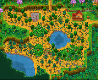

|
| ”
|
„Még mindig sok munkám van...”
|
| — Robin
|
Hiányos fordítás
Ezt a cikket vagy szakaszt nem fordították le teljesen magyarra. Üdvözlünk az oldal fordításával.
Utoljára szerkesztette Quicksilver 2024-12-02 16:14:30.
|

A térképek kiválasztó területe karakter készítésekor.
A Stardew Valley játékban 7 különböző Farm térkép közül választhatsz. Minden Farm térkép a Farm felosztását változtatja meg, és mindegyik más-más előnyöket kínál, illetve különböző képességek használatát helyezi középpontba.
Az Alap Farm szolgál legtöbb helyjel termések ültetéséhez és állatok neveléséhez. A többi Farm térképen kisebb a hely a gazdálkodáshoz, de mindegyik különleges előnyökkel szolgál.
- Az Alap Farm a Földművelés képességet használja ki legjobban.
- Az Erdei Farm a Gyűjtögetést használja ki legjobban.
- A Folyami Farm a Horgászást használja ki legjobban.
- A Hegytető farm a Bányászást használja ki legjobban.
- A Vad Farm a Harc és a Gyűjtögetés képességet használja ki legjobban.
- A Négysarok Farm a Coop játékmódban lehet előnyös, és egyenlő arányban használja ki a képességeket.
- A Strandfarm pedig a Gyűjtögetés és a Horgászás képességet használja ki, és különleges gyűjtögethető tárgyak jelenhetnek meg.
A Farm térképek befolyásolják a Parasztház belső kinézetét is a bútorok, tapéta és a padló szempontjából. A külső kinézetét azonban nem befolyásolják a térképek.
Minden térképen elhelyezésre kerül egy romos épület, ami a játék során átalakítható Üvegházzá. Az Üvegház mozgatható az ácsműhelyből.
Térkép típusok
| Név
|
Térkép
|
Leírás
|
Kapcsolódó képesség
|

Alap farm
|

|
- Ennek a térképnek a nagyrésze Földművelhető terület, ideális termések és állatok számára.
- A felkapálható négyzetek száma 3427, 235 pedig, nem kapálható, de beépíthető.
- A legnagyobb egybefüggő négyszögletes terület a 63 x 31 (1953) négyzetrácsból áll.
|
 Földművelés Földművelés
|

Folyami farm
|

|
- A víz nagy mértékben csökkenti a beültethető területet.
- Players start with a Fish Smoker.
- A térkép legnagyobb része vízből áll. A Horgászás a legkézenfekvőbb ezen a térkép típuson:[1]
- Az esetek 70 százalékában a játékos folyami halakat kaphat el, tehát olyan halakat, amik egyébként Pelikán Város folyóiban lelhetők fel.
- Az esetek 30 százalékban a játékos olyan halat is elkaphat, ami a Tufanedv-erdőben lévő tavakban megtalálható.
- A felkapálható négyzetek száma 1578, amiből 516 nem kapálható, de beépíthető.
|
 Horgászás Horgászás
|

Erdei farm
|

|
- A farm határa fákkal és bokrokkal van körbevéve, akárcsak a Titkos Erdőben.
- Többféle bokor megtalálható, szamóca bokrok is.
- The western clearings spawn 8 renewable Large Stumps (Hardwood), seasonal forage items, and unique Weeds that always drops Mixed Seeds. The possible forage items are:[2]
- When fishing:[1]
- 5% of the time (modified by daily Szerencse), players will catch Woodskip. The exact formula is 0.05 + Daily Luck. This means that if the daily luck is at or below -0.05, there is no chance of catching a Woodskip. With maximum luck (0.125, only possible with the Special Charm), each cast has a 17.5% chance to hook a Woodskip.
- 45% of the rest of the time, players will catch pond and river hal, i.e., hal that are found in Cindersap Forest.
- Otherwise, players will catch only szemét.
- Additional ponds and grass areas decrease the overall farming area.
- The number of tillable tiles on this map is 1413, with 1490 non-tillable but buildable tiles.
|
 Gyűjtögetés Gyűjtögetés
|

Dombtetői farm
|

|
- The southwest hilltop spawns Stones, Érc nodes, and Geóda nodes depending on the player's Mining level. The mining area may sometimes be blocked by a Large Stump, Large Log, or a Boulder, making it impossible to enter until the player has the correct tool.
- Additional cliffs and a stream decrease the overall farming area.
- When fishing:[1]
- 50% of the time, players will catch forest river hal, i.e., hal that are found in the Tufanedv-erdő folyóiban.
- 50% of the time, players will only catch trash.
- The number of tillable tiles on this map is 1648, with 930 non-tillable but build-able tiles.
|
 Bányászás Bányászás
|

Vad farm
|

|
- Monsters spawn at night (scales with the player's Combat level).
This map can spawn more Wilderness Golems than other farms if they have spawning monster enabled. See Advanced options for more info.
- When fishing:[1]
- 35% of the time, players will catch lake hal, i.e., hal that are found in Hegyek tavaiban.
- 65% of the time, players will only catch trash.
- Additional cliffs and ponds decrease the overall farming area.
- The number of tillable tiles on this map is 2131, with 444 non-tillable but build-able tiles.
|
 Harc Harc
|

Négy sarok farm
|

|
- The farming area is split by cliffs into four distinct areas, each reminiscent of some of the other Farm Maps.
- Top left: Forest Farm. This quadrant has a small grassy area containing a Large Stump, and weeds here can transform into the same unique ones that always drop mixed seeds as on the Forest Farm.
- Top right: Standard Farm. This quadrant has the most farming space.
- Bottom left: This quadrant has a pond. Players have a 50% chance of catching forest pond hal, i.e., hal that are found in the Tufanedv-erdő tavában.[1]
- Bottom right: Hegytető Farm. This quadrant contains a small quarry that spawns Rocks and Ore and Geode nodes depending on the player's Mining level.
- Additional cliffs and ponds decrease the overall farming area.
- The number of tillable tiles on this map is 2952.
|
 Többjátékos Többjátékos
|

Strand farm
|

|
- Sprinklers don't work in the sandy soil.
- There is a patch of 202 tiles (10x20 plus 2) where sprinklers can be placed (requires clearing from trees and large logs with steel axe or better).
- Good foraging and fishing, and a lot of open space. Sometimes, supply crates wash up on shore.
- Both forest and beach foragables may spawn.
- Intended for "seasoned players", not as a first farm. A typical strategy of increasing crop fields and crafting large quantities of quality sprinklers won't work on this farm.
- When fishing:[1]
- 15% of the time, players will catch Hínár.
- 5.1% of the time, players will catch one of Osztriga, Korall, Éti kagyló or Szívkagyló. Chances for each item are equal.
- 52.73% of the time, players will catch ocean hal, i.e., hal that are found in Strandon.
- 27.17% of the time, players will catch trash.
- The number of tillable tiles on this map is 2700, with 1928 non-tillable but buildable tiles.
|
Gyűjtögetés
Horgászás
|

Mezei farm
|

|
- Has a chewy blue grass that animals love.
- Players start with a Coop and two chickens, randomly named.
- Instead of receiving 15 Parsnip Seeds from Mayor Lewis, the player instead receives 15 pieces of Hay from an unknown source.
- When fishing from the river, players have a 40% chance of catching forest pond fish, i.e., fish that are found in the Cindersap Forest pond. 60% of the time, players will catch trash.[1]
- The number of tillable tiles on this map is 2066.
|
Földművelés
|
Külső források
- ↑ 1,0 1,1 1,2 1,3 1,4 1,5 1,6 Azok a halak, amik egy adott Farm térképen elkaphatók, a Farm::getFish és Farm::getFishingLocation játékbeli kódolás által vannak meghatározva, illetve az Alap Farm kódolásában a GameLocation::getFish helyen és a Content\Fish.xnb adatfájlban.
- ↑ Lásd: Farm::DayUpdate a játék kódolásában.
Játék frissítések
- 1.0: Az Alap Farm térkép bevezetése.
- 1.1: Az Erdei, a Hegytető, a Folyami és a Vad Farm térkép bevezetése.
- 1.4: A Négysarok Farm térkép bevezetése.
- 1.5: A Strandfarm térkép bevezetése. Változtatás a chat ablakban, ami kijavította azt a hibát, amitől nem lehetett padlót lerakni Tufanedv-erdő közelében. Az Üvegház már elmozdítható